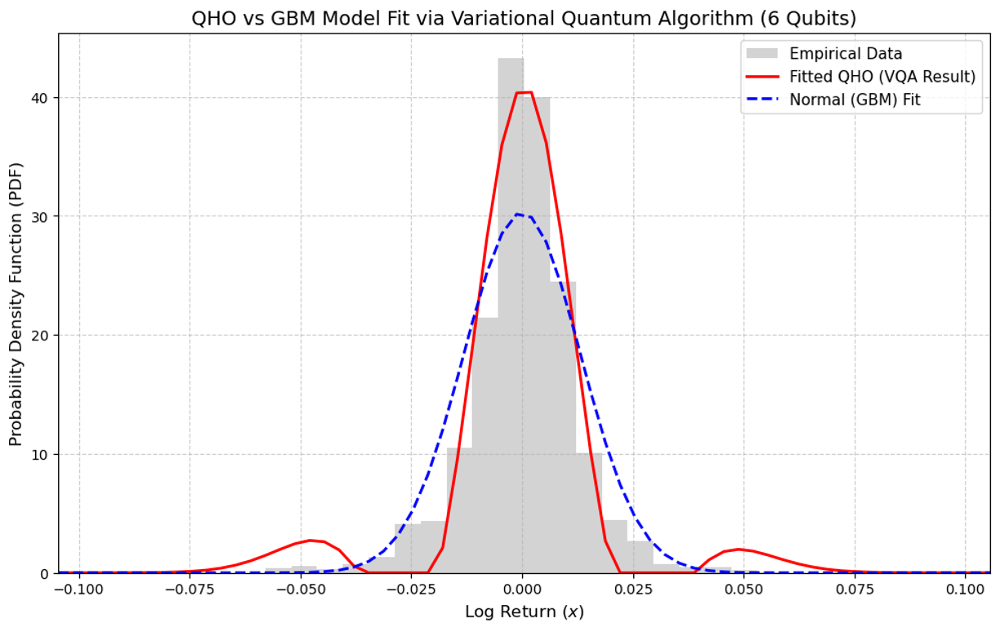
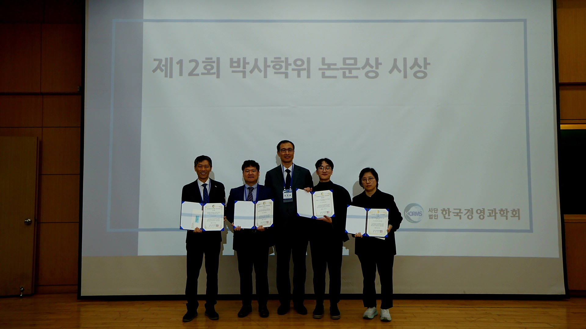
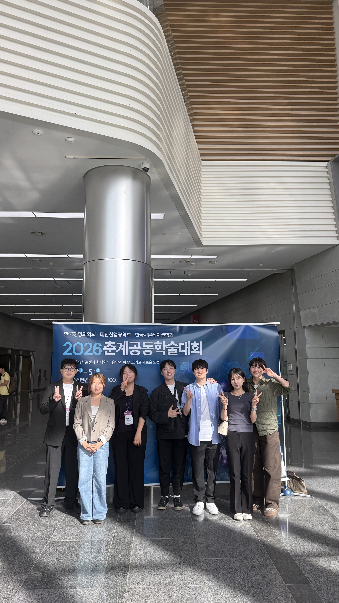

한국외국어대학교 Finance & AI 융합학부
금융 애널리틱스 연구실
AI in Finance
Financial Analytics
FinTech
Real Estate
About
연구실 소개
금융 애널리틱스 연구실(FINancial Analytics Lab, FINA Lab)은 인공지능 모델링을 활용하여 정확하고 설명 가능한 자산가치평가 방법론을 연구합니다. 또한 통계학, 물리학, 금융계량경제학, 데이터 사이언스를 결합하여 금융시장에서 관측되는 복잡한 가격 형성 메커니즘을 계량적으로 이해하는 것을 목표로 합니다. 나아가 연구 결과를 실증 분석과 의사결정 지원에 활용 가능한 형태로 확장하는 것을 목표로 합니다.
우리 연구실은 자산가격 데이터의 구축, 유의한 가격 요인의 식별, 설명 가능한 가치평가 모형, 금융 시스템 분석이라는 네 가지 연구 축을 중심으로 연구를 진행합니다.
01
자산가격 데이터 구축
Asset Price Data Infrastructure
02
유의한 가격 요인의 식별
Structured and Unstructured Factor Discovery
03
설명 가능한 가치평가 모형
Explainable Valuation System Development
04
금융 시스템 분석
Financial System Analysis with Econometric and Physical Approaches
Members
구성원
PUBLICATIONS
연구 성과
Quantitative structure and sentiment of news articles on housing policies
Chaos 36, 033110, 2026
Spatial appreciation of the floor plan complexity in housing price appraisal
Chaos, Solitons and Fractals 203, 117580, 2026
Toward transparent and accurate housing price appraisal: Hedonic price models versus machine learning algorithms
Financial Innovation 11, 141, 2025
Reputation matters: Residents’ sentiment and housing price
Humanities and Social Sciences Communications 12, 1896, 2025
Asymmetric impacts of artificial intelligence on housing price valuation across education levels
Humanities and Social Sciences Communications 12, 1884, 2025
Housing price estimation and reasoning based on a large language model
Finance and Large Language Models, Springer Nature, 27–45, 2025
The effect of rare events on information-leading role: Evidence from real estate investment trusts and overall stock markets
Humanities and Social Sciences Communications 11, 1628, 2024
Aggregated hedonic dataset with a green index: Busan, South Korea
Data in Brief 57, 111009, 2024
Economic impacts of a subway system: Exploring local contexts in a metropolitan area
Research in Transportation Business and Management 56, 101188, 2024
Intelligent nuclear decommissioning solution: Code for site characterization and management of overall surveys
Annals of Nuclear Energy 196, 110212, 2024
Assessment of street-level greenness and its association with housing prices in a metropolitan area
Scientific Reports 13, 22577, 2023
Information management for nuclear decommissioning: Synthesizing texts with drawings
Transactions of the Korean Nuclear Society, 2022
Deep neural network as a tool for appraising housing prices: A case study of Busan, South Korea
Journal of Physics: Conference Series 2287, 012019, 2022
Hedonic dataset of the metropolitan housing market: Cases in South Korea
Data in Brief 35, 106877, 2021
Projects
프로젝트
Scotland-Korea Collaboration on Quantum Simulation in Asset Pricing based on the Quantum Harmonic Oscillator
Quantum Technologies Alliance for Research Challenge
본 프로젝트는 Glasgow Caledonian University 연구진과의 Scotland-Korea 공동연구로 수행되었다. 연구의 핵심 목표는 양자 조화 진동자(Quantum Harmonic Oscillator, QHO)를 기반으로 자산 수익률 분포를 묘사함에 있어 파라미터 추정의 효율성을 양자 컴퓨팅 알고리즘을 통해 최적화하는 것이다.
자세히 보기
NEWS
소식
안시현 교수가 한국외국어대학교 Finance & AI 융합학부에 임용되었습니다
안시현 교수가 2025년 9월 한국외국어대학교 Finance & AI 융합학부 조교수로 임용되었습니다. FINA Lab은 금융 데이터, 인공지능, 자산가치평가, 금융 시스템 분석을 중심으로 본격적인 연구 활동을 시작합니다.
한국경영과학회 추계학술대회에 참가했습니다
안시현 교수는 연세대학교에서 개최된 한국경영과학회 학술대회에 참가하여 “거대언어모델 기반 가상의 감성 지수 생성 및 부동산 가격 간의 관계 연구”를 주제로 발표를 진행했습니다.

안시현 교수가 제12회 경영과학 박사학위 논문 최우수상을 수상했습니다
안시현 교수는 박사학위논문 “Essays on Real Estate in the Theory of Finance”를 바탕으로 한국경영과학회로부터 제12회 경영과학 박사학위 논문 최우수상을 수상했습니다.
FINA Lab에 새로운 학부 연구생들이 합류했습니다
2026년 1월, 이연지, 이서현, 황서윤, 김주현, 이태희 학부 연구생이 FINA Lab에 함께하게 되었습니다. 앞으로 다양한 금융 AI 및 부동산 데이터 분석 연구를 함께 진행할 예정입니다.

한국은행-네이버 공동 AX 컨퍼런스에 참여했습니다
FINA Lab은 한국은행과 네이버가 공동으로 개최한 AX(인공지능 전환) 컨퍼런스에 참여했습니다. 금융 분야에서 인공지능 전환이 만들어내는 변화와 연구 가능성을 확인할 수 있는 의미 있는 시간이었습니다.
이유준 학부 연구생이 FINA Lab에 합류했습니다
2026년 3월, 이유준 학부 연구생이 FINA Lab에 함께하게 되었습니다. 앞으로 금융 데이터사이언스와 금융 AI를 중심으로 연구 활동에 참여할 예정입니다.
부동산 정책 뉴스 연구가 Chaos Featured Article로 선정되었습니다
안시현 교수는 연세대학교 안광원 교수팀과의 공동연구를 통해 부동산 정책 관련 뉴스 기사의 단어 빈도 분포와 텍스트 결속성이 감성 패턴을 결정짓는 핵심 요인이 될 수 있음을 수학적으로 규명했습니다. 해당 논문은 2026년 미국물리학협회(AIP)가 발행하는 비선형 과학 분야 권위지 Chaos (JCR 2024 기준 Top 3.6%)에 게재되었으며, Featured Article로 선정되어 Scilight에도 소개되었습니다.
Scilight article
FINA Lab이 한국경영과학회 하계학술대회에 참가했습니다
FINA Lab은 경주화백컨벤션센터에서 개최된 한국경영과학회 학술대회에 참가했습니다. 이태희 학생은 “부동산 가격 추정을 위한 다년도 헤도닉 벤치마크 데이터셋”을, 이서현 학생은 “주택 가격 결정요인의 비선형성과 시간적 변화 분석: 설명 가능한 머신러닝 기법”을 주제로 발표를 진행했습니다.
CONTACT
연구실 문의
금융 데이터사이언스, 금융 인공지능, 가치평가모델링, 금융시장분석 관련 분야로 석사 및 박사 진학을 희망하는 학생은 이메일로 연락해주시기 바랍니다.
Email
s.an@hufs.ac.kr
Office
경기도 용인시 처인구 모현읍 외대로 81 한국외국어대학교 글로벌캠퍼스 교수연구동 101호
Division of Finance & AI, Hankuk University of Foreign Studies
Financial Analytics Lab
AI in Finance
Financial Analytics
FinTech
Real Estate
About
About the Lab
The FINancial Analytics (FINA) Lab studies the development of accurate and explainable asset valuation systems through artificial intelligence modeling. We combine statistics, physics, financial econometrics, and data science to analyze financial market data, derive quantitative insights, and quantitatively understand complex price formation mechanisms observed in financial markets. We also aim to extend our research into empirically useful and decision-support-oriented analytical frameworks.
The lab conducts research around four main pillars: asset price data construction, identification of significant pricing factors, explainable valuation modeling, and analysis of financial systems.
01
Asset Price Data Construction
Asset Price Data Infrastructure
02
Identification of Significant Pricing Factors
Structured and Unstructured Factor Discovery
03
Explainable Valuation Modeling
Explainable Valuation System Development
04
Financial System Analysis
Financial System Analysis with Econometric and Physical Approaches
Members
Members
Sihyun An
Assistant Professor, Division of Finance & AI, Hankuk University of Foreign Studies
Email: s.an@hufs.ac.kr
Seo Hyeon Lee
Major Department of Information Communications Engineering, Hankuk University of Foreign Studies
Research areas Machine Learning, Real Estate Analytics, XAI
Email le2se0hy@hufs.ac.kr
Yeonji Lee
Major Division of Finance & AI, Hankuk University of Foreign Studies
Research areas Asset Price Estimation, Financial Artificial Intelligence, Financial Data Science
Email openji1123@hufs.ac.kr
Taehee Lee
Major Department of International Finance, Hankuk University of Foreign Studies
Research areas Financial Data Science, Machine Learning, Real Estate Analytics
Email leetaehee0411@hufs.ac.kr
Seoyun Hwang
Major Division of Finance & AI, Hankuk University of Foreign Studies
Research areas Econophysics, Financial Market Analysis, Time Series Analysis
Email lucia0332@hufs.ac.kr
Juhyun Kim
Major Division of Finance & AI, Hankuk University of Foreign Studies
Research areas Deep Learning, Financial Market Analysis, Time Series Analysis
Email 1521raisa@hufs.ac.kr
Yujun Lee
Major Division of Computer Engineering, Hankuk University of Foreign Studies
Research areas Asset Price Estimation, Financial Data Science, Real Estate Analytics
Email yj2089@hufs.ac.kr
PUBLICATIONS
Publications
Quantitative structure and sentiment of news articles on housing policies
Chaos 36, 033110, 2026
Spatial appreciation of the floor plan complexity in housing price appraisal
Chaos, Solitons and Fractals 203, 117580, 2026
Toward transparent and accurate housing price appraisal: Hedonic price models versus machine learning algorithms
Financial Innovation 11, 141, 2025
Reputation matters: Residents’ sentiment and housing price
Humanities and Social Sciences Communications 12, 1896, 2025
Asymmetric impacts of artificial intelligence on housing price valuation across education levels
Humanities and Social Sciences Communications 12, 1884, 2025
Housing price estimation and reasoning based on a large language model
Finance and Large Language Models, Springer Nature, 27–45, 2025
The effect of rare events on information-leading role: Evidence from real estate investment trusts and overall stock markets
Humanities and Social Sciences Communications 11, 1628, 2024
Aggregated hedonic dataset with a green index: Busan, South Korea
Data in Brief 57, 111009, 2024
Economic impacts of a subway system: Exploring local contexts in a metropolitan area
Research in Transportation Business and Management 56, 101188, 2024
Intelligent nuclear decommissioning solution: Code for site characterization and management of overall surveys
Annals of Nuclear Energy 196, 110212, 2024
Assessment of street-level greenness and its association with housing prices in a metropolitan area
Scientific Reports 13, 22577, 2023
Information management for nuclear decommissioning: Synthesizing texts with drawings
Transactions of the Korean Nuclear Society, 2022
Deep neural network as a tool for appraising housing prices: A case study of Busan, South Korea
Journal of Physics: Conference Series 2287, 012019, 2022
Hedonic dataset of the metropolitan housing market: Cases in South Korea
Data in Brief 35, 106877, 2021
Projects
Projects
Scotland-Korea Collaboration on Quantum Simulation in Asset Pricing based on the Quantum Harmonic Oscillator
Quantum Technologies Alliance for Research Challenge
This project was conducted as a Scotland-Korea collaborative research project with researchers at Glasgow Caledonian University. The central objective was to optimize the efficiency of parameter estimation using quantum computing algorithms when modeling asset return distributions based on the Quantum Harmonic Oscillator (QHO).
View detailsNEWS
News
Professor Sihyun An joined the Division of Finance & AI at HUFS
Professor Sihyun An joined the Division of Finance & AI at Hankuk University of Foreign Studies as an Assistant Professor in September 2025. FINA Lab begins its research activities around financial data, artificial intelligence, asset valuation, and financial system analysis.
Presentation at the KORMS Fall Conference
Professor Sihyun An participated in the Korean Operations Research and Management Science Society conference held at Yonsei University and presented a study titled “A Study on the Relationship between LLM-based Synthetic Sentiment Indices and Real Estate Prices.”
Professor Sihyun An received the 12th Best Doctoral Dissertation Award in Management Science
Professor Sihyun An received the 12th Best Doctoral Dissertation Award in Management Science from the Korean Operations Research and Management Science Society for his doctoral dissertation, “Essays on Real Estate in the Theory of Finance.”
New undergraduate research assistants joined FINA Lab
In January 2026, Yeonji Lee, Seohyun Lee, Seoyoon Hwang, Joohyun Kim, and Taehee Lee joined FINA Lab as undergraduate research assistants. The lab looks forward to working with them on financial AI and real estate data analytics research.
Participation in the Bank of Korea–Naver AX Conference
FINA Lab participated in the AX Conference jointly hosted by the Bank of Korea and Naver. The event provided a valuable opportunity to explore how artificial intelligence transformation is reshaping the financial sector and opening new research directions.
Yujun Lee joined FINA Lab as an undergraduate research assistant
In March 2026, Yujun Lee joined FINA Lab as an undergraduate research assistant. He will participate in research activities related to financial data science and financial AI.
Housing policy news study selected as a Chaos Featured Article
Professor Sihyun An, in collaboration with Professor Kwangwon Ahn’s research team at Yonsei University, mathematically showed that word-frequency distributions and textual cohesion in housing policy news can play a central role in shaping sentiment patterns. The paper was published in Chaos, a leading journal in nonlinear science published by the American Institute of Physics (AIP), ranked in the top 3.6% based on JCR 2024, and was selected as a Featured Article and introduced in Scilight.
Scilight articleFINA Lab participated in the KORMS Summer Conference
FINA Lab participated in the Korean Operations Research and Management Science Society conference held at the Gyeongju Hwabaek International Convention Center. Taehee Lee presented “A Multi-Year Hedonic Benchmark Dataset for Real Estate Price Estimation,” and Seohyun Lee presented “Nonlinearity and Temporal Changes in Housing Price Determinants: An Explainable Machine Learning Approach.”
CONTACT
Contact us
Prospective master’s and doctoral students interested in pursuing graduate studies on topics related to financial data science, financial artificial intelligence, valuation modeling, and financial market analysis are encouraged to contact us by email.
Email
s.an@hufs.ac.kr
Office
#101, Faculty Office Bldg. Hankuk University of Foreign Studies
81 Oedae-ro, Cheoin-gu, Yongin, 17035, Republic of Korea